Active Directory Domain Controller インストール¶
手順¶
インストール¶
サーバーマネージャダッシュボード起動
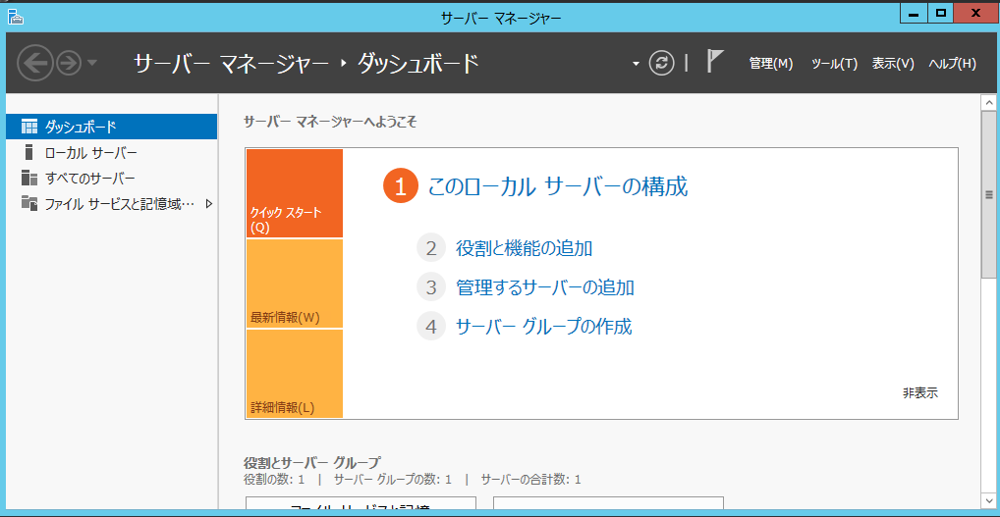{kind=link}
次へ
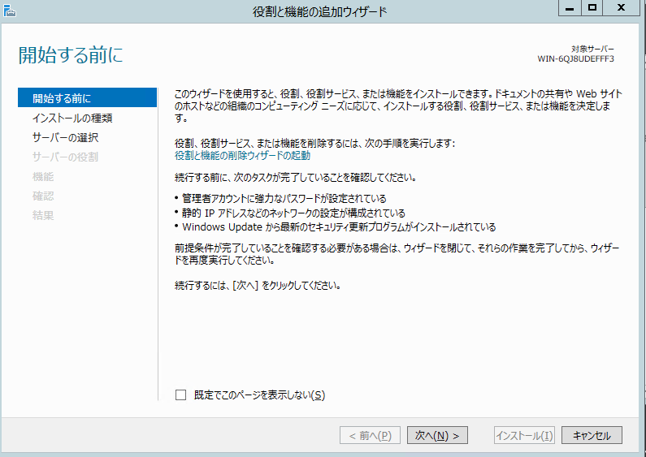{kind=link}
サーバー選択

Active Directory ドメインサービス選択
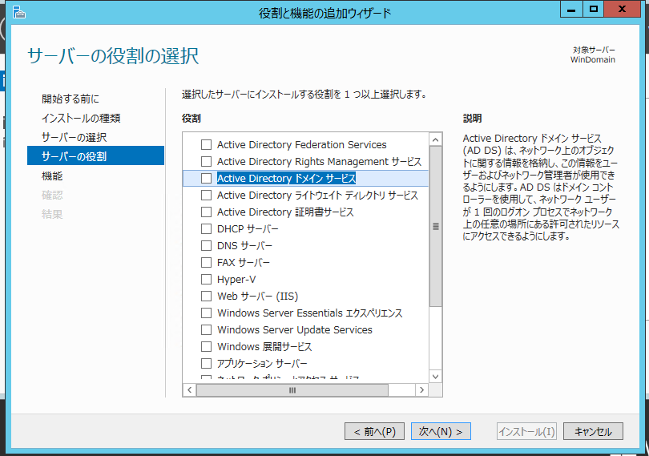{kind=link}
機能の追加
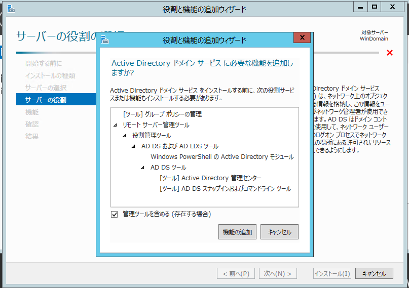{kind=link}
選択されたので次へ
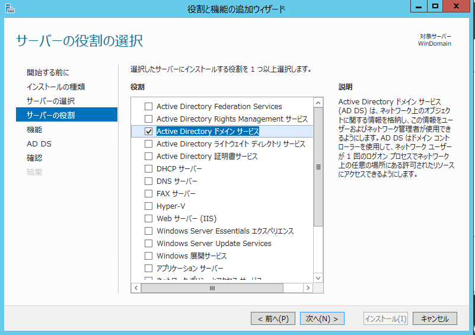{kind=link}
インストールオプションの確認。次へ。
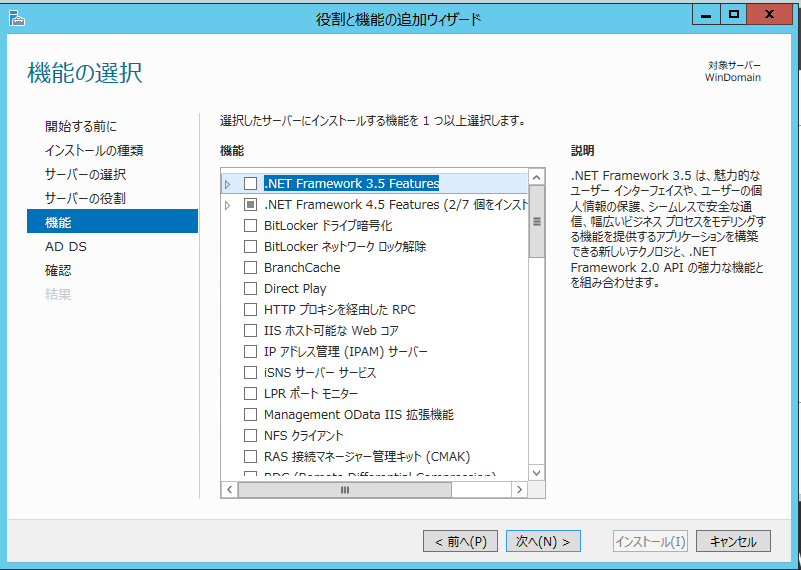{kind=link}
Active Directory ドメインサービス。次へ。
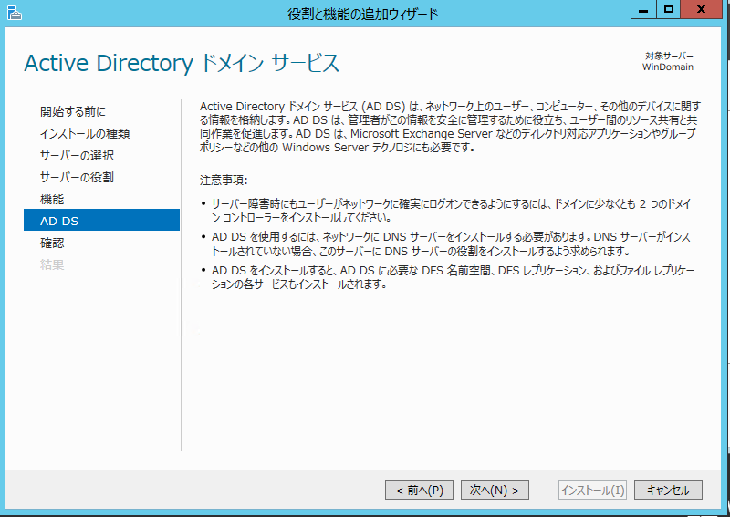{kind=link}
再度インストールオプション確認。インストール。
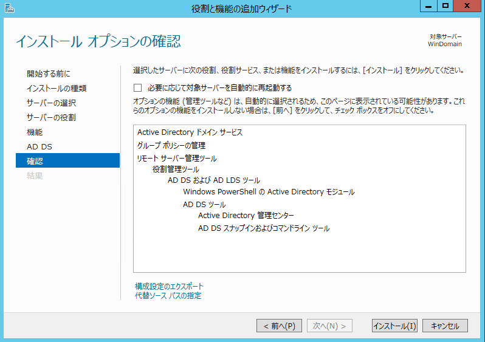{kind=link}
インストールできた。ここで 「このサーバーをドメインコントーラに昇格」 するとすぐ昇格できる。
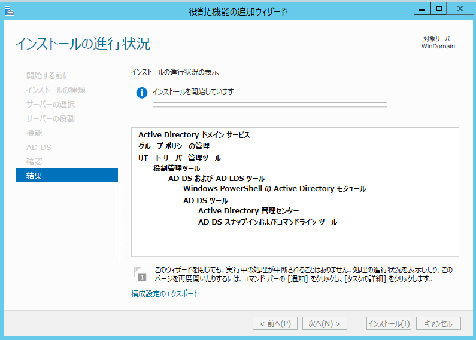{kind=link}
ドメインコントローラに昇格¶
Acitive Drectory ドメイン構成ウィザードの起動¶
サーバーマネージャで AD DSを選択し、「その他」をクリック。
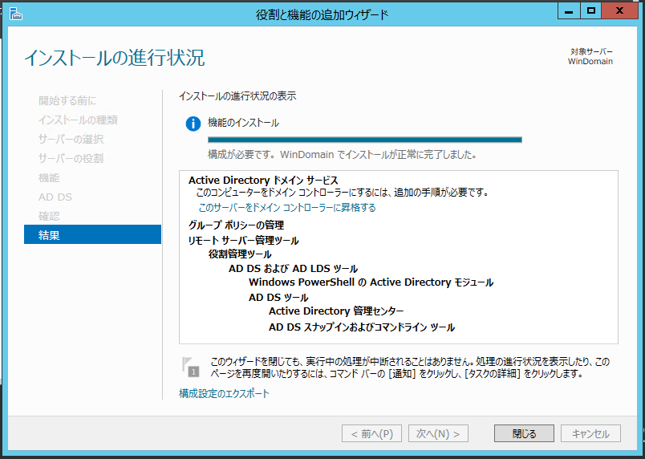{kind=link}
「このサーバーをドメインコントローラに昇格」をクリック。
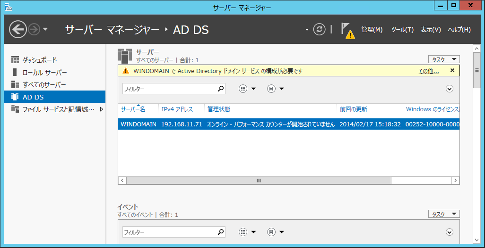{kind=link}
ドメインを構成しして昇格¶
Active Directoryドメインサービス構成ウィザードが起動される。
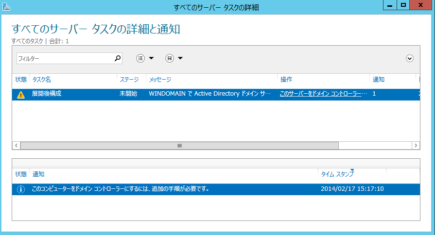{kind=link}
配置構成、の画面になるので、
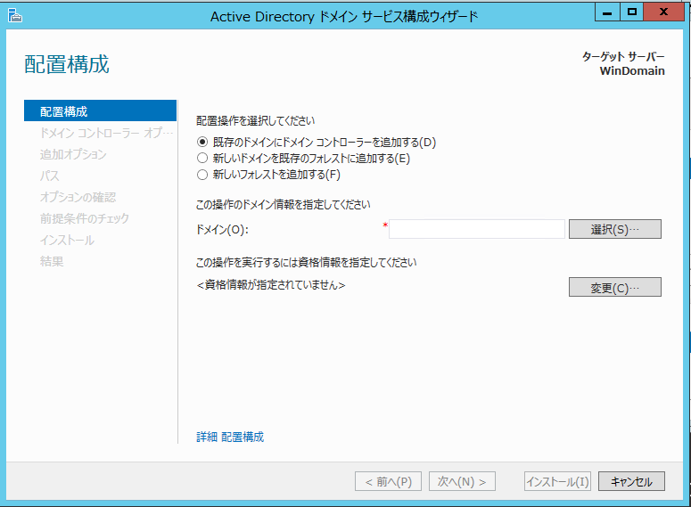{kind=link}
「新しいフォレストを追加する」をクリックし、「ルートドメイン名」を入力。ここでは openid.local
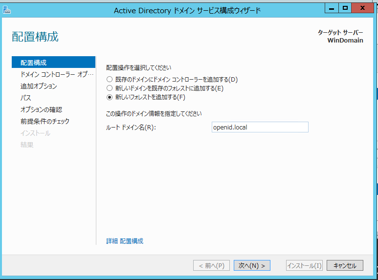{kind=link}
ドメインコントローラオプション。ここでパスワード指定（わすれないこと！）
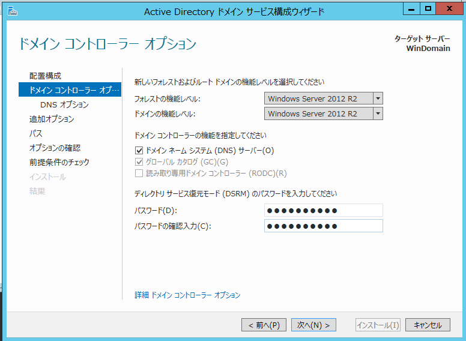{kind=link}
DNSオプション。
新しい Windows Server 2008 ドメイン コントローラーまたは Windows Server 2008 R2 ドメイン コントローラーを DNS サーバーと共に treyresearch5.net などのドメインにインストールする場合 ということで、要するにLANの環境であれば、
他のドメイン内またはインターネット上のユーザーが、
ローカル ドメイン内のコンピューター名の
DNS 名のクエリを解決しないことに問題がない場合は、
メッセージを無視し、[はい] をクリックします。
ということです。
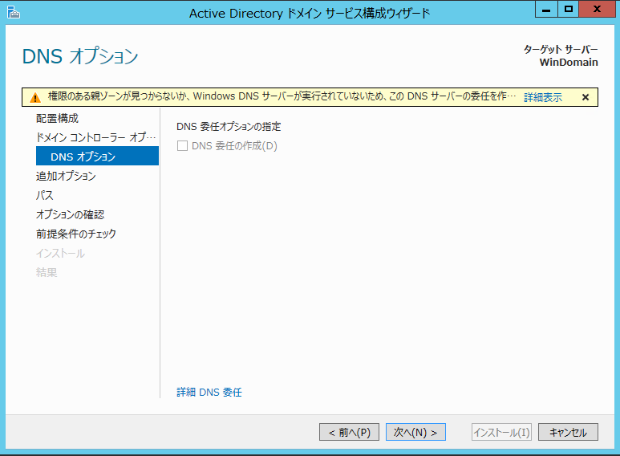{kind=link}
OK
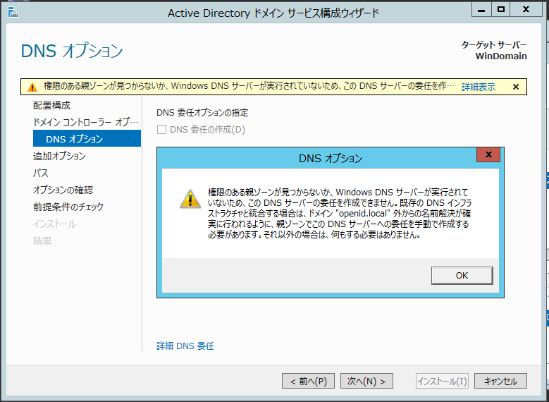{kind=link}
NetBIOS ドメイン名はそのまま
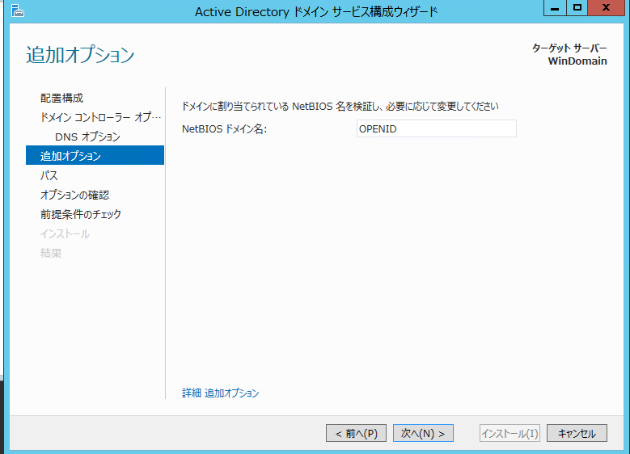{kind=link}
パス関係もそのまま

オプションの確認
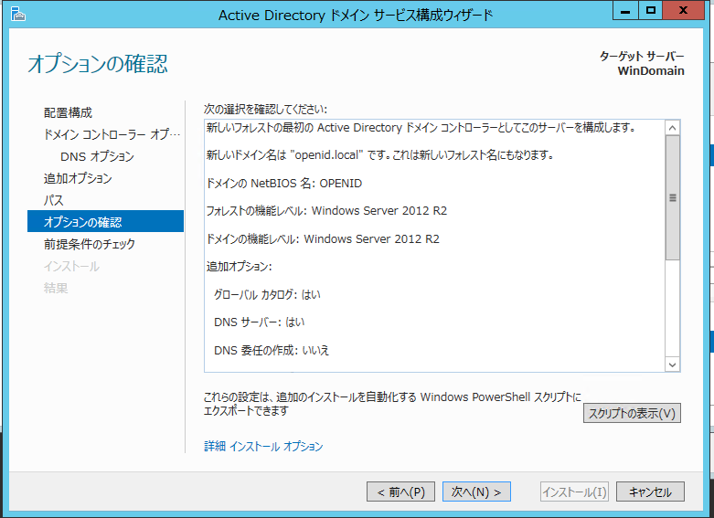{kind=link}
これは、
新しいフォレストの最初の Active Directory ドメイン コントローラーとしてこのサーバーを構成します。
新しいドメイン名は "openid.local" です。これは新しいフォレスト名にもなります。
ドメインの NetBIOS 名: OPENID
フォレストの機能レベル: Windows Server 2012 R2
ドメインの機能レベル: Windows Server 2012 R2
追加オプション:
グローバル カタログ: はい
DNS サーバー: はい
DNS 委任の作成: いいえ
データベース フォルダー: C:\Windows\NTDS
ログ ファイル フォルダー: C:\Windows\NTDS
SYSVOL フォルダー: C:\Windows\SYSVOL
DNS サーバー サービスはこのコンピューターに構成されます。
このコンピューターは、この DNS サーバーを優先 DNS サーバーとして使用するように構成されます。
新しいドメイン Administrator アカウントのパスワードはこのコンピューターのローカル Administrator アカウントのパスワードと同じものに設定されます。
次へ
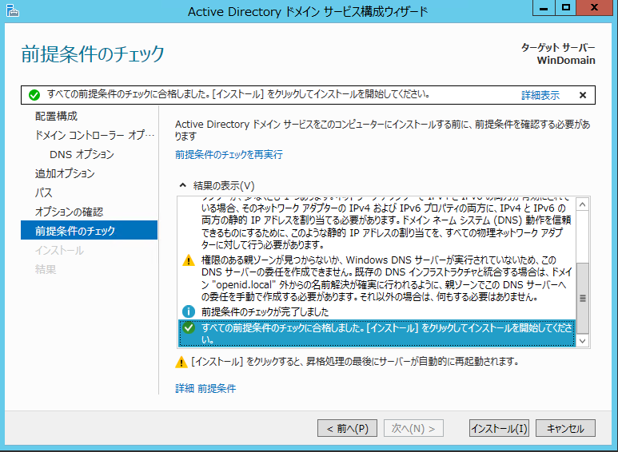{kind=link}
前提条件のチェック
Windows Server 2012 R2 ドメイン コントローラーには、 セキュリティ設定 “Windows NT 4.0 と互換性のある暗号化アルゴリズムを許可する” の既定値が設定されています。 これにより、セキュリティ チャネル セッションを確立するときに、 セキュリティの弱い暗号化アルゴリズムの使用は許可されなくなります。
この設定の詳細については、サポート技術情報 (KB) の記事 942564 (http://go.microsoft.com/fwlink/?LinkId=104751) を参照してください。
このコンピューターには、IP プロパティに静的 IP アドレスが割り当てられていない 物理ネットワーク アダプターが、少なくとも 1 つあります。
ネットワーク アダプターで IPv4 と IPv6 の両方が有効にされている場合、 そのネットワーク アダプターの IPv4 および IPv6 プロパティの両方に、 IPv4 と IPv6 の両方の静的 IP アドレスを割り当てる必要があります。
ドメイン ネーム システム (DNS) 動作を信頼できるものにするために、 このような静的 IP アドレスの割り当てを、 すべての物理ネットワーク アダプターに対して行う必要があります。
権限のある親ゾーンが見つからないか、Windows DNS サーバーが実行されていないため、 この DNS サーバーの委任を作成できません。
既存の DNS インフラストラクチャと統合する場合は、 ドメイン “openid.local” 外からの名前解決が確実に行われるように、 親ゾーンでこの DNS サーバーへの委任を手動で作成する必要があります。
それ以外の場合は、何もする必要はありません。
よって、インストールをクリックして開始
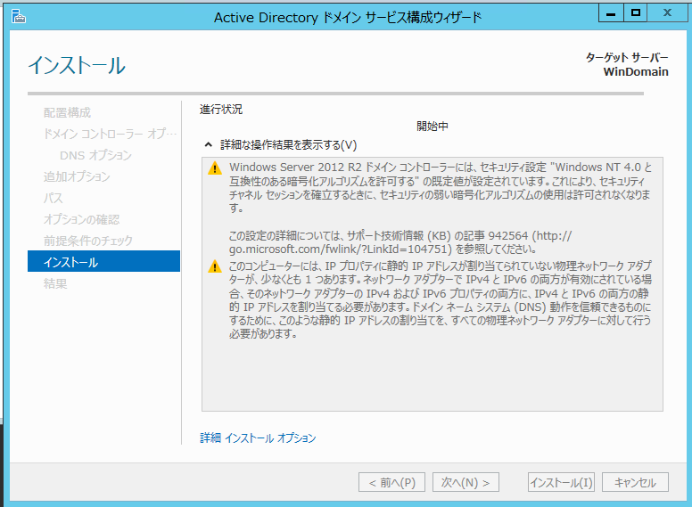{kind=link}
自動的にリブート
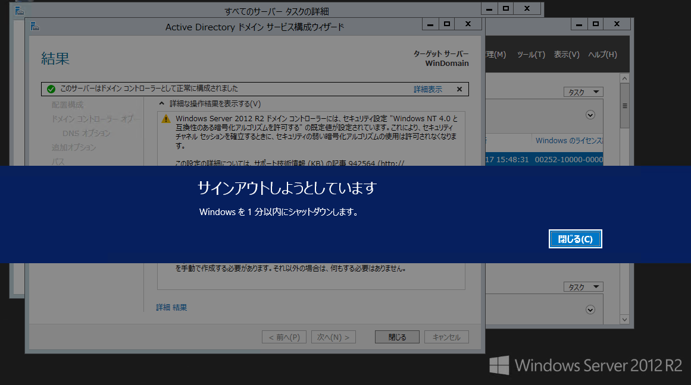{kind=link}